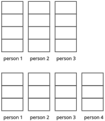

12. Who We Live With
12.2 Competencies
Just as I gave names to the PD system and the capsule port in order to be able to write about them, I want to do the same here. Since this form of living together will share many characteristics with families, I will call it a “familia” from here on. A chosen family, rather than a family based on kinship ties.
So I want to present a new and different form of group organization that takes the place of the nuclear family as the most closely cooperative group its members belong to. From this point on, I will call it “familia”. Its members live together, pool their resources, and trust one another.
How large should a familia be?
The minimum is obviously two, otherwise it is not a group but an individual. In order to have advantages over a nuclear family by virtue of its size, a familia must have more adults than that, in other words more than two. But how many more?
Estimation of the best group size:
To get a good sense of this, let us look at how the decisive advantage and the decisive limitation of group size scale with the number of its members.

The decisive advantages of any cooperative group are division of labor, scaling, and specialization. The increase in these advantages produced by one additional group member can be estimated well as 1/n (where n is the new group size). For example, increasing a group from three to four people brings a maximum improvement of 1/4, or 25%. That means each group member would have 25% less work than before if the amount of work does not increase (which will never be the case, so this is the theoretical maximum) and were shared fairly. By the same token, each group member can specialize by having 25% of their skills taken over by the newly added person (again assuming perfect distribution).The decisive disadvantage of any cooperative group is the number of relationships each person must maintain with the other group members. This is a limitation for the same reason that Dunbar’s number describes a limit to the social relationships we can maintain overall. Every social relationship costs time and mental capacity, both of which are finite resources. Compared with simple social relationships, those within a group that lives together and pools its resources cost significantly more time and, above all, more mental capacity: I need to spend enough time with a person and know enough about them to build and maintain a relationship of trust. In addition, as group size increases, not only does the required amount of time and mental capacity for mutual trust increase: in some cases, it may not be possible at all because two people simply do not get along with each other. The larger the group, the more likely such a case becomes (the total number of relationships between group members grows quadratically: (n-1)/2 × n; with 4 members there are 6, with 6 members 15, with 10 members 45 pairwise relationships...).
These social relationships are not a steadily increasing disadvantage. For one, they increase well-being and the sense of security (by preventing loneliness), for another, they make use of mental and time capacities that are present anyway (for example during meals). Only as the group grows larger does this reverse and begin to overwhelm the individual members.
So too will the disadvantage of subgroup formation within the familia, which would then no longer be the innermost social group, only begin to appear beyond a certain size, and from that point on become ever stronger.
At exactly what group size the disadvantages outweigh the advantages, I do not know. Nor will it always be the same everywhere. But I can estimate it and continue from there: I estimate that the minimum size for a familia to function well will be four adults, six to eight adults is ideal, and beyond that the disadvantages will increase significantly. With more than twelve adults, the disadvantages definitely predominate, and the familia would be dysfunctional.
As I said, this is only my estimate. The good thing is that a familia can grow gradually by integrating additional people or couples over a longer period of time (see 12.4). That way, the tipping point from advantages to disadvantages can be noticed before it is clearly exceeded.
I do not count children in this number. Nor do I count very old or very ill people. The group size refers to those who can participate in the division of labor (including specialization) and contribute to the safety net of the entire familia.
Of course, this is not all or nothing: children gradually take on tasks, and even old people can still help with some tasks for quite a while before becoming entirely dependent on care.
For the following description, I will assume a familia of six adults.
Alongside compatibility, specialization in different competencies is a core characteristic that is meant to distinguish familias—instead of a romantic relationship, as in a nuclear family, or a concrete goal, as in a commune. So let us take a closer look at exactly that: which competencies should be present within every group that lives together and pools its resources, whether nuclear family or familia?
• Contact: Someone should be good at navigating society, have many friends and social connections, and be charismatic.
Thanks to this competency, the group is well anchored in the wider fabric of society and can draw on the support of friends, coworkers, or the neighborhood when problems arise.
• Crafts: Someone should be able to keep a house or apartment in good shape and use the proper tools to make or repair objects. Thanks to this competency, in many cases no repairman needs to be called, because the necessary expertise is present within the group. Above all, this means that in an emergency a repair can be carried out immediately, rather than only once an appointment with a repairman becomes available. This is very useful in crisis situations.
I also count mending clothes that have torn or lost a button as part of this competency.
• Food: Someone should be good at cooking and baking and know how to eat properly and healthily. If the group has a large garden, then this person should also know a great deal about useful plants and be able to plant, harvest, and process them. For this reason, I would generally also count a good hand with plants that green an apartment, house, or garden as part of this competency.
Of course, one could simply buy all food ready-made. But in practice, it is far cheaper and healthier to prepare food oneself. The larger the group, the better the ratio of benefit versus money and time spent on food preparation.
• Harmony: Someone should be good at listening, putting themselves in others’ shoes, finding compromises, and settling conflicts. This competency helps the group enormously in living together harmoniously and raising its children well and lovingly.
• Health: Someone should know how the human body works, how to keep body and mind healthy and fit, and how to provide first aid.
Thanks to this competency, the members of the group are healthier and more satisfied with their lives. They know when they need to see a doctor instead of letting a problem drag on, and in a medical emergency someone can provide first aid immediately.
• Overview: For tasks to be distributed fairly, someone should have an overview of the tasks that need to be done, who would be best suited to do them, and who has already done how much for the group.
Someone should know everything the group owns, what it is worth, which contracts and insurance policies the group has, how to file a tax return correctly, how accounting works, and how to invest money well. Since money is the decisive means in our society for achieving all goals, the group should have someone who is good at handling it.
• Safety: Someone should worry about possible dangers, know how to prepare for them, and keep a cool head in emergencies of all kinds.
This competency ensures that the group is as well prepared as possible for hard times, emergencies, or sudden disasters.
• Technology: Someone should know as much as possible about modern technology, be good at using computers and smartphones, and be able to program home automation. They should understand what current technologies can do and what future ones will bring, and have a good grasp of logic and mathematics.
This competency ensures that the group can keep up in a constantly changing world and realize efficiency gains through new technologies.
This classification and division is certainly not perfect, and to some degree it is arbitrary. But it should be entirely sufficient to give a good sense of the broad range of skills needed to avoid wasting a lot of potential in one’s life or expose oneself to dangerous risks. From here on out, I will use this list of competency areas to explain the concept of the familia. But the concept in no way depends on this particular classification.
So there is a very large number of skills that should be present in every group living together and pooling its resources. If someone lives alone, they should be able to do all of this themselves (with the exception of Harmony, which is dispensable for singles without children...). For each of these skills, it is far more expensive, more cumbersome, or downright impossible to buy it as needed. I have not even listed artistic talents that enrich a group, such as making music or telling stories, nor a good general education and understanding of the world, such as is needed to answer the questions of curious children.
No one can cover all of these competencies alone. And even among couples living together, it will be the great exception for all of these areas to be well covered. There are simply too many different skills, for too many different aptitudes.
In a familia with six adult members, on the other hand, which has with every new addition made sure to cover as many of the competencies still missing in the familia as possible? I think such a group has a very good chance that in the end only a few gaps in this list of requirements remain.
Of course, these competency areas are not all the same size. So not every familia member will master exactly one of them; it can just as easily be two or three areas. Conversely, someone may be good in only part of a competency area, splitting it between two people: Perhaps someone else cooks better than the person who knows how to eat healthily. Or someone is good at most crafts, but leaves sewing to someone else. Or someone is good with children, but not at settling conflicts between adults.
For each of these competencies, or parts of them, not just one but at least two people within the familia should feel responsible. Though it is enough if one person is good at it, and the other helps and wants to become better at that competency.
Which brings us to the topic of task division and spending time together.
Before I now begin to describe the rituals and rules of a familia, along with the reasons why things should be done one way rather than another, I want to emphasize that these are only suggestions. Just as there is no one nuclear family and no one shared apartment that functions according to a fixed set of rules, the same is true of the familia. Depending on what a familia agrees on, it will find its own solutions for many things.
But while everyone can picture a nuclear family with a garden and a dog, two children, and a fair division of housework, or a shared apartment that cooks together once a week and has its cleaning schedule posted in the hallway, with the familia I am describing something entirely new. Since prior knowledge does not fill in the gaps when I outline the idea in just a few words, I instead have to describe everything in much greater detail, in order to show at least one way in which it can work. So long as the basic ideas of the familia are preserved, there are countless possibilities for putting them into practice.
What I am continuing to sketch out here is one specific way a familia might organize the division of tasks and spending time together.
There should absolutely be one shared point in the familia’s daily routine when everyone is together. A shared meal is an obvious choice for this. Breakfast or dinner, depending on the working hours of the familia members. Missing a shared meal once in a while due to another commitment is expected and not a problem. But for each individual, it should be the exception, so that on most days everyone is there.
Shift work: Someone who works shifts and therefore regularly cannot take part would definitely be a problem. Perhaps there is another block of time during the day, possibly one that changes weekly, when everyone can spend time together?
Otherwise, the person working shifts would have to be regularly told by someone what is happening in the familia, and their feedback would have to be passed back to these familia meetings by delegation. Depending on the dynamics within the familia, and on the character of the shift worker, that may work well or not at all. If not, ideas beyond those I have had so far are needed in order to bring the working world and this way of living into alignment.
At these shared meals, each familia member briefly talks about what they have experienced, how they are doing, what they have been thinking about, when they will be where, and so on. Above all, everyone will bring up everything that concerns the familia as a whole: upcoming and completed tasks, expenditures from the shared fund, contacts with others, possible problems. The meal is also an excellent opportunity for exchanging knowledge and offering help whenever someone believes they can help another familia member well.106
It is the task of the Overview competency to remember or write down everything relevant (and later digitize it if necessary).
This ritual must never feel like a form of surveillance. These must all be things that everyone wants to tell the others anyway. Because there is mutual trust between all familia members.
If, in a nuclear family, one partner asks the other, “Where are you going?” and the answer is, “Out”, then that family is broken. Because one does not tell the other on their own where they are going, and refuses to say even when asked directly. There is no longer mutual trust between the two, and thus no basis for the family. It is exactly the same in a familia. If it feels wrong to tell the others these things, then the basis for everything is missing.
Of course, there should also be other times and activities that the familia spends together. Whether movie or game nights, a shared hobby, or outings. But the daily shared meal, at which everyone brings one another up to date, is the pivot point of shared familia life.
There is a certain number of tasks that have to be done within the familia. Shopping for and preparing food, supervising and supporting children, keeping the apartment clean, managing the money, carrying out repairs, and so on.
Whenever at all possible, these tasks should be done by two members together. By two who feel responsible for the same competency area, by two competency areas that both contribute to solving the task, or by one person from the relevant competency area and a second person who has time to help.
Having tasks consistently tackled by two familia members together brings many advantages:
• As a result, the different familia members spend much more time with one another than they otherwise would. That helps greatly in building and maintaining mutual trust.
• The fact that familia members spend more time with people they like and trust should make them more satisfied. Humans are social beings; only very few are happy on their own in the long run.
• It is often easier to motivate yourself when working with somebody.
• If everyone experiences every task at least once, that avoids conflicts: this way, everyone learns how much time and effort the task requires, and values its completion accordingly.
• It avoids disputes about whether work was actually done well and properly (even if that should not happen where there is good mutual trust, it is better to avoid that burden from the outset).
• If both are thinking along, many foolish mistakes can be avoided.
• If a task is done by two familia members in the same competency area, the two can learn from one another in carrying it out. This also builds redundancy in case one of those two is unavailable at some point. Even without overlapping competency, carrying out a task together will always lead to knowledge transfer.
• In the long term, it increases efficiency. Everyone experiences every kind of work at least once, so everyone also gets the opportunity to think about how the work might be made more efficient or automated. This also creates a solid basis for familia discussions about the tasks.
• It gives each familia member a sense of appreciation in areas they are good at, and encourages them to find and expand such competencies.
• If two competency areas are useful for a task, then cooperation will make it possible to carry the task out much better than would be possible without those combined skills.
Effort calculation for completing a task (e.g. cooking a meal) for all members of the familia, compared with a single person and a nuclear family:
|
|
single |
nuclear family |
familia |
|
number of adults |
1 |
2 |
6 |
|
scope of the task |
1 |
2 |
6 |
|
work required |
100% |
80% |
67% |
|
total effort |
1 |
1,6 |
4 |
|
people working on the task |
1 |
1 |
2 |
|
working time per person |
1 |
1,6 |
2 |
The values for “work required” are guesses. It is the percentage of the task scope that actually has to be invested as working time in order to complete the task. If one takes on a task for the whole group (for example by cooking more at once), one will always be more efficient at it (the percentage of work required is lower) than if one does it alone as a single person.
Some parts of the task even stay the same when done for several people at once, for example the travel time for grocery shopping. How much less work it is to complete the task for the whole group at once will vary from task to task and also from person to person.
The scope of the task is normalized to 1 for the single person, and their work required to 100%. The total effort needed to complete the task is: “scope of the task” × “work required”.
If one divides this result by the number of people working on the task, one gets the working time required per person.107
This calculation shows, among other things, that the time required per person to complete the task in the familia, despite cooperation and increased efficiency, is still higher than for a single person or in a nuclear family. Which means that all the disadvantages that arise, alongside the advantages, from working in pairs (for example: two people have to go to the supermarket and back) are always outweighed by the greater efficiency resulting from the larger overall scope of the task.
In many cases, the two will not be doing exactly the same thing anyway, but dividing the task between themselves: one chops the vegetables, the other gathers the ingredients and stirs everything together in the pot.
How are the tasks divided? How is it ensured that this is fair for everyone? (Reminder: What follows is only one possible way it can be solved!)
This is a problem that teams in companies also constantly face. Even though a familia is something different from a team in a company, one can still draw inspiration from there. The concept serving here as inspiration is called Scrum.
The division of tasks takes place regularly (I suggest once a week). Often enough that the amount of tasks remains manageable each time and people can respond in short cycles. But spaced far enough apart that the organizational effort does not become too great because everyone is constantly busy going through the task-allocation procedure.
The task allocation is first prepared jointly by the competencies Overview and Harmony. The Overview competency puts together all that should be done in the near future (with a suggested competency area for each item), who has not worked together in a long while, and who has recently contributed how much.
The Harmony competency adjusts the list of upcoming tasks based on what is beneficial for a good familia climate. In other words, it objects if the amount of work is already too great, or adds new tasks whose result would do everyone good (for example beautifying the apartment). It adds preferences regarding who should work together in the next cycle, perhaps also specifying a particular task or a restriction such as “not in the Crafts competency area”. Having two specific people work together can either help resolve existing conflicts, prevent emerging problems, or simply create an opportunity to deepen mutual trust.
Lastly, based on the previous working hours of the familia members, the two determine who should work somewhat more or less in this cycle. After all, in the last cycle an imbalance may have arisen due to tasks that came up spontaneously, tasks that turned out to be far more extensive than expected, or tasks that could not be carried out. That should be balanced out again so that it remains fair for everyone.
The task allocation then takes place after the shared meal. First, Overview and Harmony present the list of tasks, noted on index cards (perhaps in different colors for different competencies?). The whole familia then groups the tasks according to their size. For routine tasks that keep coming up, this will normally be obvious. But other tasks will first have to be discussed briefly, so that everyone can get a sense of them.108 If necessary, the competency assigned to the task can also be adjusted (for example if a second additional competency would be very useful in carrying it out).
It may also happen that a particular task is dropped from the task list as unnecessary or too much for this cycle, or that another task is added that Overview and Harmony had not considered.
The two announce how unevenly the tasks should be distributed (for example: Tim and Sarah should take on 3 fewer task points this week, after all they dealt with the burst water pipe last cycle). Lastly, Harmony states its preferences regarding who should work together on a task.
Once the list of tasks has been put together and each has been assigned a scope, the actual allocation begins. This can happen, for example, by having everyone take turns choosing a task, then either naming a preferred partner or asking who would like to join. Since, thanks to the shared meals, everyone roughly knows who has time when, it should be easy for everyone to judge whether they can readily find a time to do the task together.
By dividing the total task points by the number of adults, it is clear to everyone how many tasks each familia member has to take on. This is of course taken into account accordingly when the tasks are chosen.
Example: 60 task points, 6 adults, Tim and Sarah 3 points fewer. Accordingly, Tim and Sarah should each take on tasks worth 8 points, and the other four 11 each (since 2×8 + 4×11 = 60).
In addition, everyone makes sure that the balance between small and large tasks is distributed fairly as well.
This approach to task allocation may sound complicated at first. As I said, it is only one possible way to organize task allocation. I am suggesting it here because it has already proven itself and makes very efficient use of time while fulfilling many goals at once:
• Since everyone decides together which tasks should actually be done, by whom, and how extensive they are, no one feels overlooked. The result is better and fairer than if one familia member dictated it.
• Overview and Harmony contribute a proposed list of tasks and competencies, making the joint decision simpler, which saves time.
• A shared to-do list emerges—something that is also recommended for organizing one’s life independently of any group structure. After the tasks have been allocated, everyone has clear goals for what needs to be done that week.
• At the same time as the tasks are allocated, it is also coordinated who will spend time with whom. And Harmony can influence this so that relationships within the familia are as good as possible.
• Everyone sees that all are helping to complete the necessary tasks. And at the same time, everyone can feel satisfied by how small their own share of the total task load is (with six adults and pairwise work, 1/3).
• Everyone knows which tasks the other familia members plan to take on and with whom they will be spending time. Which in turn helps build and maintain familiarity.
The number of tasks assigned will vary depending on the needs of the familia and from week to week. After all, the point isn't to fill workdays for employees! It is simply to distribute everything necessary for the familia and household efficiently and fairly across all shoulders.
Compared to singles and nuclear families, task allocation in the familia is a significantly more complex problem. If handled poorly, much or all of the efficiency gained through division of labor and specialization can be lost again, as can harmony within the familia. So it is very important to find a good way of doing it, which is why I have presented the version that seems best to me in such detail.
Which of these tasks have been completed and where someone has run into problems and cannot get any further is part of what people tell one another at the daily shared meal.
In addition, on the last day of the cycle, before new tasks are assigned the next day, the current tasks should be looked back on once more during the shared meal: What worked, what didn't, what has been left undone? Should something be divided differently or handled differently in the future? How well did each pair work together? Who lacked certain skills for a task, who learned something new?
To some extent, such things will surely already have come up in the days before, but it still makes sense to take another look at what has been achieved together and reflect on it. It helps the competencies Overview and Harmony prepare for the next task allocation, and helps the familia as a whole complete its tasks with as little effort and as little frustration as possible.109
Here is a list of some example tasks, the competency areas that will take care of them, and a few words on how they might be carried out:
• Preparing the task allocation – Overview and Harmony: This is a completely ordinary task that is worth points and that someone will take on. Since in the familia two people are responsible for each competency, even this task does not always have to be taken on by the same two people!
• Grocery shopping – Food and Overview: Putting together the shopping list based on planned meals, health, and the preferences of the members. Then the actual shopping and putting the groceries away. The division of labor makes a major shopping trip for six adults plus children much more manageable.
• Repairs, assembly, and furnishing – Crafts and Technology: Craftsmanship tasks and furniture assembly will be handled by the Crafts competency. As soon as apps, software, and configuration are involved, the Technology competency comes in. In some cases both competencies are needed, though in most cases one of the two will be enough. Many craftsmanship tasks are easier with two people, and a second person is especially useful here to avoid labor-intensive mistakes.
• Emergency preparedness – Safety and Overview/Health/Food: Whether water canisters, food supplies, first-aid kits, or power banks. Everything meant to prepare the familia for emergencies falls under the Safety competency. It will bring in Overview for bookkeeping and money matters, and Food or Health for all nutrition- and health-related issues.
• Childcare – Harmony: Harmony has the best general competency for dealing with children in the familia. As long as the person’s workload does not become too great, this competency should be used for it. A happy childhood is valuable in and of itself, and well-raised, sensible, and imaginative children make familia life much better for everyone.
The task will be divided into weekdays or time blocks, so that at different times different familia members are responsible for childcare. The second person will contribute with their own competencies in order to teach the children different skills. For example, it is very valuable when someone can answer children’s “Why?” questions with child-friendly explanations—that is easier said than done! Additionally, it is of course just as important for children as for adults to build mutual trust with all familia members.
Lastly, it is a major advantage never to be alone when providing childcare, so that at any time one person can deal with an emergency while the other is there for all the other children. If, on the other hand, there are only one or two children in a familia, childcare presumably won't be done as pair work if there is no way to combine it with other tasks. It is simply too inefficient for two adults to be constantly looking after only one child.
• Household – any: Household tasks such as tidying up, cleaning, and doing laundry will be taken on by the familia members who have few tasks in their competency areas, and whose point totals are therefore not yet filled. Such household tasks are often quite monotonous and can be done without much thought. So the division of labor has its great advantage here in motivation, as well as in the opportunity to talk while working and thus make the work easier.
Shared childcare is of course not possible from birth. In the first two years of life, it is extremely important that the mother is constantly available as the primary attachment figure.[68] During this period after birth, the mother should therefore stay at home and be there for her baby. Not only through constant presence to strengthen the primary attachment, but also for breastfeeding and co-sleeping.
Compared with the nuclear family, one advantage of the familia during this time is that the mother, even if she cannot continue her profession from home, can still do far more than just care for her own child and do household chores. I have just listed some of the tasks that arise within the familia. Depending on her own competencies, the mother can for example still prepare task allocations for the whole familia, take care of repairing, assembling, and setting up devices, advance emergency preparedness, or care for other children.
Of course, the other familia members continue to take on their share of familia tasks as well. Overall, a familia therefore has far more flexibility than a nuclear family or a single mother to distribute tasks in a way that doesn't overload anybody. That the amount of work is significantly smaller per person thanks to the familia’s greater efficiency helps enormously with this.
In addition, the other familia members naturally already help with caring for the baby during these first two years of life and thus become secondary attachment figures for the child. Once the child is older, the trust that has been built up also allows other familia members to care for the child without the mother needing to be constantly present.
Shared childcare in the familia has major advantages. For the children, who grow up with siblings and always have playmates. Who develop better social skills and bonds with several trusted people, all of whom interact with them more calmly.
For the adults, for whom only a smaller part of their time is unavoidably tied up by childcare, who can therefore interact more calmly with the familia’s children and have energy for other goals.
For the familia as a whole, whose entire free capacity is not tied up by childcare. Instead, two adults can watch the children while the other four together or separately go out in the evening, or pursue a hobby. And the next day they switch (depending on who has this task on which weekday), so that everyone has free evenings. Here too, it is very important that mutual trust exists between all familia members, so that somebody can entrust their children to another familia member without hesitation, and those children feel just as safe there as with their biological parents. Furthermore, it is once again important that every competency is present twice within the group, so that the Harmony competency can have evenings free of children too.
The group as a whole should agree on who is best in which competency area. I think it is better if there is no single leader for everything in the group. Decisions that do not have to be made immediately can be discussed and made during the daily shared meal (with a vote if no unanimous decision can be reached). If a decision cannot wait that long, then the group is small enough that it should work well for a different person to take on the leadership role and make decisions depending on the area. For that, it is very useful that the competency areas are something the familia members are always aware of. After all, they play a major role every time tasks are distributed. As with so much else, the prerequisite is that everyone knows each other well and trusts one another. Even when someone else in the group makes a decision in their area of competency whose consequences one cannot foresee oneself.